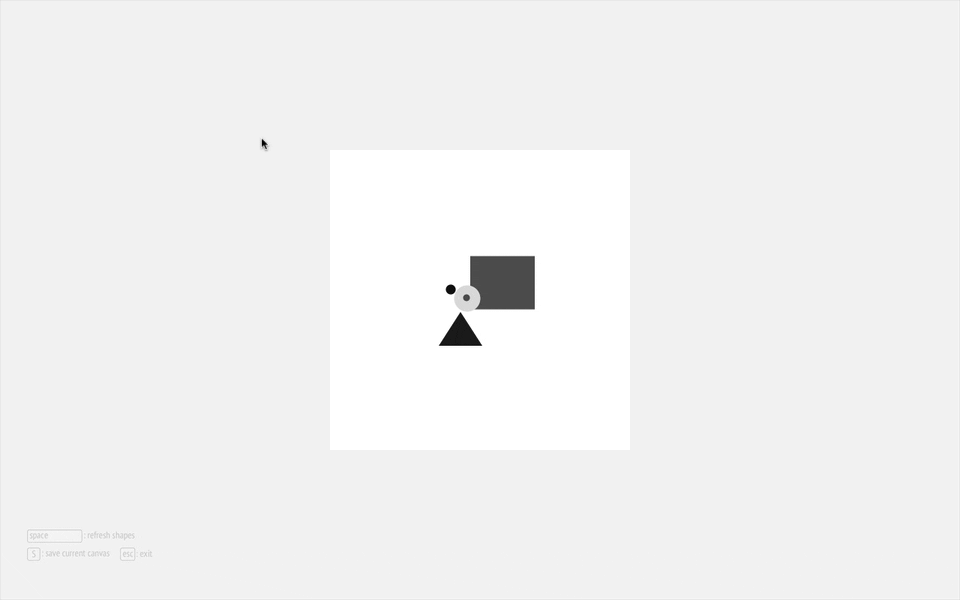
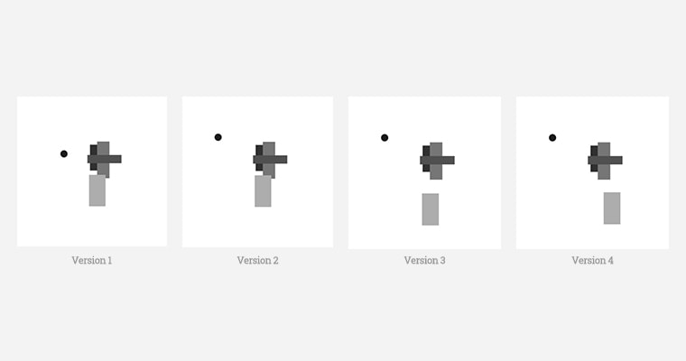

My thoughts:
"Play is the highest form of research." said Albert Einstein. Nowadays, we pay more attention on machine learninig, rather than augmenting human intellect with machine. However, we can use computers for not only games, entertainments, shopping and so on, but also more importantly learning. Computer technology should make us, especially kids, smarter.

We learn through playing.
Project info
- Interactive software
- User interface
- Processing 3
What I did
- Building the application
- Playing with the application
- Collecting feedbacks
Inspirations
- Magic Ink
- Teaching to See
- The Best Interface Is No Interface

FormPlayer application (download)
Idea
I got my idea from an awesome documentary Teaching to See, by one of the best presents of art education, designer and educator Inge Druckrey. In one of her classes, she asked students to practise designing with only 5 basic shapes.
Design exercises with 5 shapes
Goal
My goal of this project is to design and build a simple application for exercising graphic layout also with 5 basic shapes.
There are 2 reasons to do it:
(1) to build it by myself, not just redesign a prototype with many features.
(2) to explore how design and programming work together in detail.
Designing
Task Analysis
Let's see how we do the exercise with Photoshop or Sketch. The workflow in Sketch is:
(1) Create a canvas
(2) Draw a shape
(3) Move the shape
(4) Repeate 4 times (step 2 and step 3)
(5) Create another version
(6) Compare two versions

Workflow in Sketch
User Interface
The Best Interface Is No Interface. User interface helps us focus on what we are doing and help us to explore what we want to. The buttons in first version affect how we see the layout in canvas. So I use keys as controls instead.
first version

last version
Building
According to Task Analysis, I built the application which will automatically generate 5 random shapes when space key pressed.
There are 2 advantages:
(1) Users focus on only Moving and Comparing steps.
(2) Program gives us infinate combinations of shapes to help us explore more possibilities.
press the Space key to restart

press the S key to save

compare versions
Playing
This is the most interesting and valuable part of this projects. I collected some of my works and others from my friends.

my works
my friends' works
Gif
The program can make a gif for saved slices when you exit.

Gif
Future work
Because of my limited coding skills, this application version does not accomplish the Saving and Comparing feature very well. I hope that I could build the next version as I designed in the future. I could drag text to directly view the saved slices.
Version
Good interaction design helps us learn better.